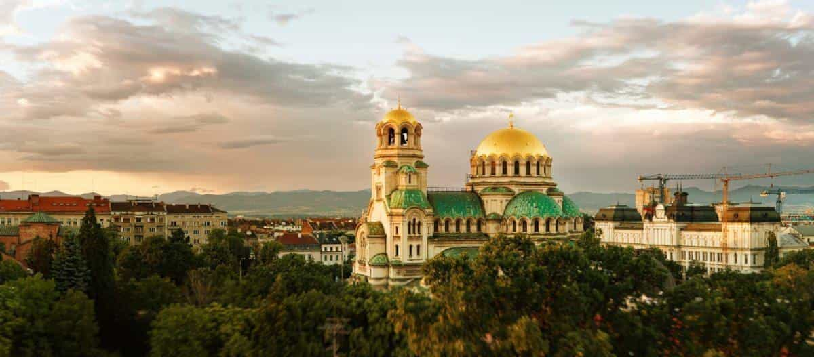
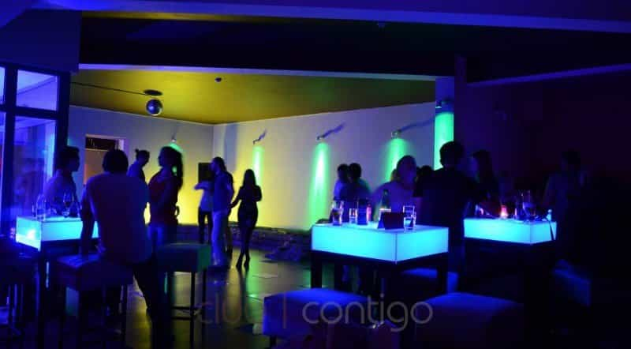
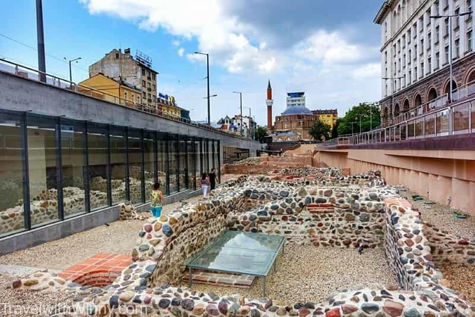
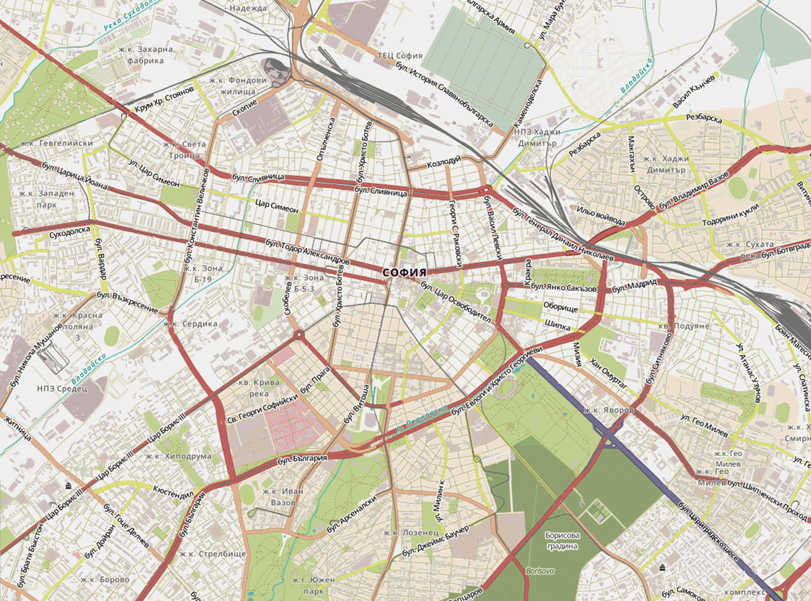
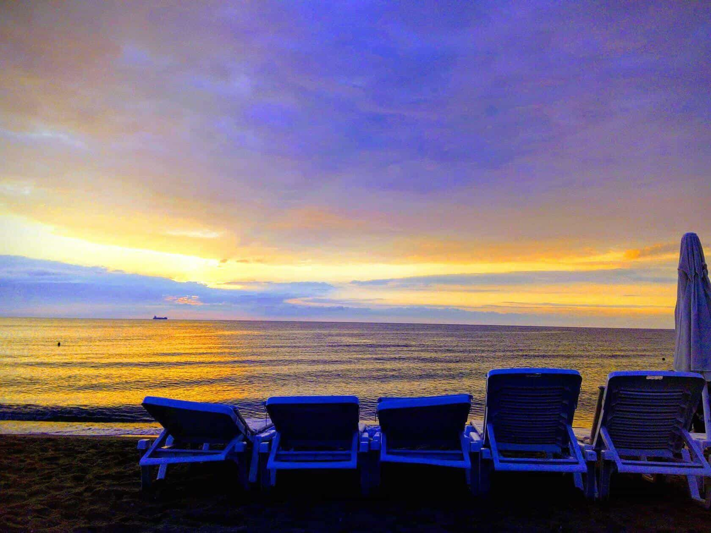
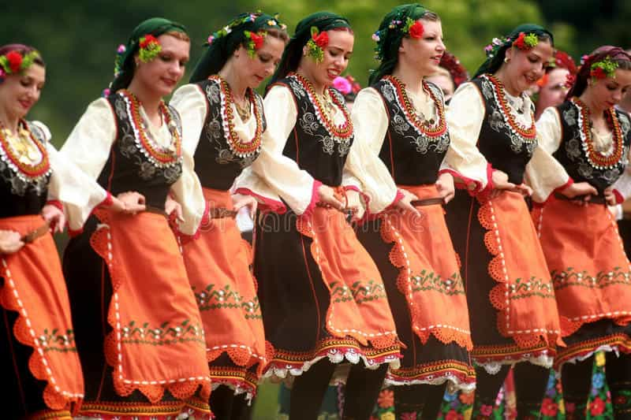
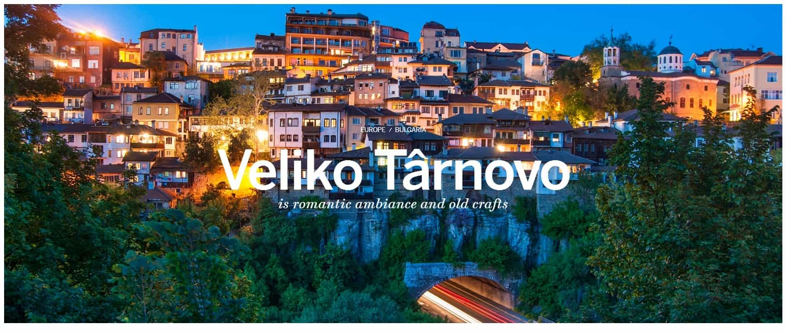
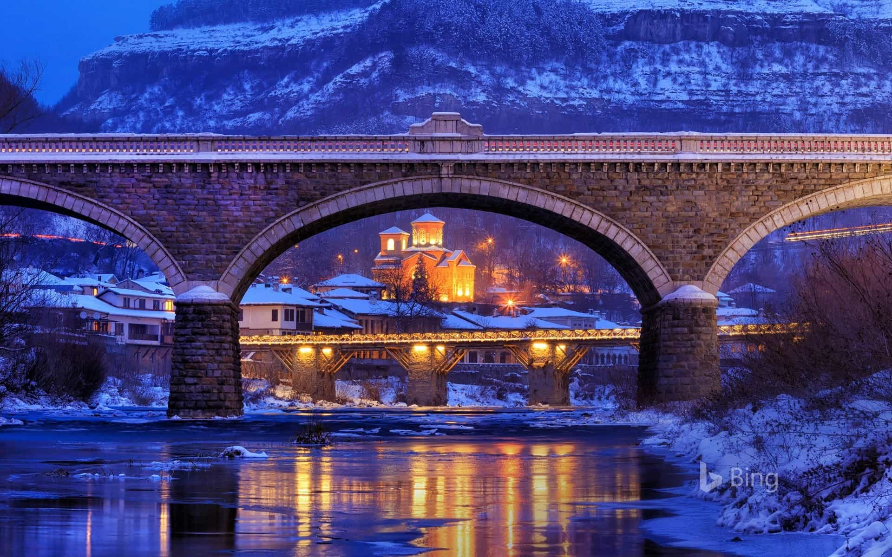

Applied Neuroscience Strategist
The inventor of the most clever cocktail toast ever, former participant in a bank robbery, almost died underwater twice, raconteur & smart drug dealer.


I’m an American digital nomad guy who’s been living in Bulgaria for over a year, I’ve lived abroad for 6 years now in a couple of different countries and see more of a future for myself here than elsewhere. Bulgaria offers almost all of the quality of life, accouterments and conveniences that you’ll find in any of the developed western “democracies” but without the overwhelming feminism, globalism, “diversity” and cultural self loathing. You would think that you would have to choose between one or the other, but surprisingly here in this little country on the south eastern edge of Europe I’ve found both.
Me at the military museum, I was filming a videoblog about the airplane metaphor which explains why human rights are antithetical to human nature
This is probably what you’re most interested in so let’s talk about it first!
If you’re not convinced yet just Google Bulgarian women
From my article Seducing Sofia (Bulgaria)
Bulgarian women are aesthetically a whole lot closer to my fantasy girl; they are curvier and a little darker than Ukrainians yet refreshingly elegant and well put together compared to the frumpilicious Romanians. A bulgarski trotting down the avenue in her heels, form fitting jeans and fashionable scarf could easily be confused for a light skinned Colombiana, until she opened her mouth and spoke quite competent English.
Most of the Eastern European woman stereotypes apply; they are feminine and pleasant, relatively submissive and take extra care of their appearance but they don’t have a ton of personality and aren’t really chatty like the modern western woman of Anglo extraction is and they don’t have a lot of money.
At least in Sofia, while not nearly as feminist as say German women, the women are modern European women;
They speak English well.
Most of them attend college and are eager to discuss their careers.
They are more family oriented. Almost all them come from nuclear families who they seem to respect and love.
I’ve met zero single mothers. I’m sure there are some here but I’ve met none in my social circle or dating here.
They are a little religious, they attend eastern church service a couple times a year but most are not pious practicing Christians.
I don’t meet a lot of married young women as I have elsewhere in Eastern Europe.
Like latinas you kiss them on both cheeks when greeting them.
Ukrainians age better, although most Bulgarian women over 35 are still relatively attractive and skinny. So if you’re considering a long term investment, take a good look at her mother and ask yourself if you in 20 years would be happy with an approximation of that in your bed every night.
I’ve slept with two women here, I’m not sure if that’s enough experience to rate the general sluttiness of the bulgarskis but based upon my experience and that of other guys I’ve talked with they are probably easier than Russian or Ukrainian girls but will require more investment than Western woman who you hookup with 2 hours after meeting them.
I don’t go out of my way the push the bounds of polite conversation with strangers but I’ve gotten the distinct impression that political correctness is virtually none-existent here. An off-color joke about women or black people really won’t earn you social ostracism here.
I regularly attended English language meetup groups here and elsewhere I’ve found the content of these kinds of meetups to be a bit dull; the conversation is usually pretty limited to generic questions about where you’re from, where you’ve visited, what food you tried, etc. But here we would have these wide ranging philosophical discussions about history, sex, politics, business, morality and religion. No way you could discuss those sorts of things with strangers in the west without triggering and offending someone!
There was one gay parade in June but that’s it. I’ve seen no pride flags around town. No conspicuous gay bars. It’s acceptable (and often encouraged) to mock gays in social settings. I’ve encountered no women bragging about being bisexual.
Walking around the center I’ll occasionally see some deviant looking young people with the weird tie-dye hairstyle and torn alternative-look clothing but it’s not the norm.
In the English language meetup I told them about the #MeToo hysteria in the west and retroactive sexual consent laws which they found baffling.
I’ve met zero self identified feminists here and more than a couple women who seemed to revile feminism.
I’ve seen zero activism promoting mass migration. Bulgarians are naturally wary of Turks and Arabs.
Once on Facebook I saw an event posted for an antifa rally BUT it only had 7 people RSVP’d. In the year that I’ve lived here in the center I’ve seen zero public political squabbling or protesting going on.
Funnily, I see swastikas from time to time spray painted on buildings. I see more of those than I do leftist symbols. You’ll also see some pro-putin artwork here and there. I haven’t seen anything mocking Trump. Mostly you just see a lot of Bulgarian flags, walking down the street you really won’t forget what country you’re in.
Communism was not quite as cruel and tyrannical to Bulgarians as it was to Romanians or Russians but Bulgarians have a healthy skepticism of socialism and leftism.
After spending time in over 25 countries Bulgaria is probably the best compromise I’ve found for quality of life vs cost of living.
The speed and reliability of the Wifi really matters to me and in Bulgaria you will not be disappointed! It’s very fast, almost everywhere in the country. It’s certainly better than in Spain and Germany, two countries I spent some time in.
In a year of living in the country I’ve generally felt very safe. My Bulgarian friends have advised me that petty violence is pretty rare here. So while you should always watch your back walking home from a bar you don’t need to worry much. The exception to this might be the neighborhoods or street corners where gypsies hang around; women steer clear of these areas after dark. In a year in the country the worst thing to happen to me was a taxi driver who ripped me off late one night.

I found Sofia to be quiet cosmopolitan, I never ran out of entertainment options. There’s a wide spectrum of fine dining restaurants, hole-in-the-wall joints and cafes where you can sit outside and enjoy the sunshine.
The nightclubs and nightlife don’t quite measure up Western Europe, the United States or Medellin, Colombia but I certainly wasn’t bored by the nightlife. There’s a good scene for salsa and Kizomba dancing.

Apparently the city has over 70 escape rooms, of which I did several with my friends, which was a blast!
Unlike many European capitals there’s no river running through it with corresponding riverfront district but there is a big pedestrian boulevard lined with all sorts of great places to eat, drink and be merry.
Every day I would stroll right past a cool archaeological site downtown and the well preserved ruins of the ancient Roman city of Serdika.

The city has an abundance of parks and green spaces.

Being the bourgeois blogger I am, I revile public transport and usually insist upon being chauffeured around in the finest of little yellow taxi cabs, but the few times I took public transport it was clean and very functional. The Sofia metro is very modern and on par with the metro in Germany and my native Denver, Colorado.
There is no Uber in Sofia but there’s an intuitive App called Taxime that is almost as good. I’ve never had to wait more than 10 minutes for a taxi using it. A 15 minute taxi ride across town would cost $5 – $7.
Some of the streets, sidewalks and old buildings are kind of beat up and crumbling but it’s not nearly as bad as in some parts of Eastern Europe that I’ve visited. At least in Sofia, the infrastructure seems pretty on par with anywhere in western Europe. Although you do see some of those ugly communist apartment blocks around town.
My meager freelancer income buys me a pretty fabulous existence here.
Enjoying a succulent dinner with friends at Shtastlivetsa (The Lucky Man) – I think it’s best restaurant in town!
I rented a room in a (not opulent but not terrible) flat right in the center of the city for about $300 monthly. A datenight dinner and drinks at a fancy restaurant is about $20.
Groceries are pretty good value, my weekly budget for the two simple healthy meals I eat a day at home was about $45 a week even accounting for some of the fancier organic foodstuffs I like. Like in many poorer countries eating out is often a better value, a tasty sandwich or salad at a cafe is about $3, and a filling sushi dish at a nicer restaurant is about $10. A decent beer about $3, a glass of wine is even cheaper and the shitty local beer is almost free.
I became a regular at the best cafe in the town that served high quality coffee which satisfied my snobbish tastes. A strong cafe Americano costs about $1.50. Nightclub cover charges are almost never more than $5.
The most outstanding value I found was a 24/7 accessible coworking space (in a not amazing location} for $40 a month.
I got a very relaxing but not exactly therapeutic (and definitely not sexy) 60 massage for about $22 which is a pretty good value.
We took several romantic weekend get away mini-vacations to the seaside. These decadent weekends of fine food, booze, sun and sex always ended up costing less than $150 total.
This is southeastern Europe so think of Eastern European stereotypes of slavic stoicism with a bit of southern European charm and hospitality.
The Bulgarian mentality seems pretty healthy to me. They are proud of their little nation that has been around in one form or another for thousands of years. Their national psyche still seems to be overcoming the trauma of communism, they have some inbred humility unlike Russians or the french. Bulgarian men are hardworking and generally reliable but not particularly ambitious. Bulgarians have a quintessentially middle class mindset.
In this little country of only 7 million people, Bulgarians have a healthy in group preference and desire for self preservation.
As far as “diversity” there is a little; about 5% of the population are gypsies who everyone seems to hate, generally the gypsies seem to be a poorly behaved k-selected demographic but they don’t seem to cause any serious trouble like minorities do the West. Bulgarians are really NOT in a hurry to apologize for history and redistribute their resources and property to gypsies. Turkish or Bulgarian Muslims are about 15% of the population although different sources and people I’ve talked with argue that it’s a lower percentage – as far as I can tell they are very well behaved Muslims; it’s been decades since a Muslim terrorist attack here and this survey found no radicalisation among Bulgaria’s Muslims.
Walking around the center of the capitol I’ll see a black guy here and there but I really suspect that they are tourists, this country has closed borders and is really not in a hurry to import Africans. The two black guys that live here that I know actually speak Bulgarian and have families here. I’ve seen zero race mixing propaganda here. So there’s a little “diversity” but it’s really not being shoved down the collective throat of the country.
They seem to really like Americans despite our bombing their cities into rubble in WW2. They also like the anglo British cheeky sense of humor and accent.

I was quite impressed with the general cultural sophistication of (especially) the young people. A number of young Bulgarians have read Tolstoy, Dostoevsky, and Ayn Rand. They have a cogent understanding of the more recent history of WW2 and the soviet union.
Many young Bulgarians have remarkably good English – better than what you’ll hear in the neighborhood I grew up in Denver. My friend Nikolay here out of the blue dropped used the word profane to describe the local pop music and once my girlfriend was describing an novel and she said that book is very… grandiloquent.
They regard themselves as offspring of the Byzantines and the Thracians. They enjoy relaying stories and legends of saints and heroes of their past.
Meanwhile… in Bulgaria
Walking around Sofia, people generally dress in a none-retarded way. A lot of guys looking professional in suits or dress shirts and women looking feminine wearing casual summer dresses or skirts. I’d love to see more Bulgarian women dressing in the really traditional long slavic gowns but am just happy that they don’t seem to be succumbing to the lazy hipster style sweatpants and tennis shoes look like many of Europe’s women are.
Bulgarians do like to smoke and drink but it’s not as bad as in some Eastern European countries. In over a year here I’m yet to encounter drunk Bulgarians really making asses out of themselves.
The men are generally competent and hardworking. My landlord is a gruff yet friendly guy, when I signed my lease I worried to myself: How is this guy going to screw me over with this lease? But a year later he’s been a pretty fair and honest landlord that fixed things when they were broken.
Interestingly here women’s middle names are always their father’s first names and there’s no way to change it. You’re stuck with your father’s name for life. Their surname changes when they marry like elsewhere in the world.
A lot of the problems of feminism and cultural decline that we bemoan in the manosphere are really manifestations of economic forces on humans.
“Menver”
Take my hometown of Denver, Colorado. For the past 10 years it’s gone through incredible economic boom times, job and business opportunities abound there. Thus, it’s earned the nickname Menver because it’s attracted so many men in search of the best job market.
I’ve seen more than a few of my old blue pilled friends and acquaintances on Facebook complaining about the ultra competitive sexual marketplace for men – or as they experience it, how hard it is to just get a nice girlfriend. Thus, the single men of Denver will need to do A LOT of personal development, hit the gym or drop some serious coin on the most fly threads (that or start dealing cocaine, become a nightclub DJ or a “model photographer”) to receive sex, affection and (perhaps) commitment from a pool of single women that are increasingly slovenly, overweight and entitled.
In Bulgaria you have the opposite dynamic, the economy and job market here is not quiet as bad as in say Greece or Ukraine, but most ambitious young men are eager to move to London or Germany for better job prospects, in fact the emigration of young people is one of the driving factors of population decline in Bulgaria (I don’t think population decline is necessarily a bad thing though). Thus more young Bulgarian women are watching their girlish figures, dressing in an alluring, feminine style and generally being pleasant in hopes of locking down one of the dwindling number of attractive single young Bulgarian men in the country.
One of first things I noticed in Bulgaria was an Airbnb host of mine was a guy who was, frankly, a loser; he had poor personal hygiene, mediocre personality and style and unimpressive career prospects. During the evenings he would sit around watching soccer and drinking crappy beer alone BUT he actually had a more or less cute young girlfriend – no way that guy would have a girlfriend in Menver!
I found Bulgaria quiet a bastion from the soul chilling (and sock soaking) winter of Eastern Europe. I arrived in early Jan, the Balkan winter is downright moderate compared to the Romania and Ukraine. During the Bulgarian winter you get about 45 days of really cold weather and slippery sidewalks.
Bulgaria assuaged my Vitamin D deficiency, many days were sunny and I could actually hang out on my patio. During the spring and summer it rained about every other day for a few hours, not a torrential downpour but it’s a good idea to bring an umbrella with you. If you’re a nomadic seducer in Europe, looking to geoarbitrage your lifestyle and income, Bulgaria is a great option during the colder months. As you can see in this videoblog about meditation that I filmed in the center, the weather is gloomy but not bad enough to keep you holled up in your flat.
I’ll add that it’s relatively undiscovered by the nomadic PUA/digital nomad crowd, unlike some place like Ukraine or Colombia where western men flock like the salmon of Capistrano in search of some femininity and cultural sanity.

In case you’re wondering that cover image at the top is the Asen Monument in the center of beautiful Veliko Târnovo. According to the tourism website it commemorates the…
…uprising of Asen and Petar, which led to the liberation of Bulgaria from the Byzantine Empire. The sword located in the middle is a symbol of the power and prosperity of the Second Bulgarian Kingdom.
It really is a beautiful place

Travel vlogs are not really my foray so checkout this excellent one by the very red pilled Iconoclast.
Read More: Is Sofia (Bulgaria) Worth A Visit?